Planilhas e listas
Carregue Google Sheets, TXT, CSV ou XLSX e veja tudo antes de iniciar o download.

Painel local para Windows
Versão mais recente v0.1.7Baixe, converta, revise e organize musicas com uma interface simples no navegador, sem precisar mexer em terminal.
Instala por usuario, configura suas pastas e abre o painel local automaticamente.
Tudo no painel
Carregue Google Sheets, TXT, CSV ou XLSX e veja tudo antes de iniciar o download.
Rode downloads com reescan, modo teste, logs em tempo real e fila em background.
Converta M4A, MP4, FLAC, WAV, OGG, OPUS e AAC para MP3 ou outros formatos.
Depois de baixar, o IMD pode preencher informacoes das faixas automaticamente.
Instalacao
O instalador recomendado e o Setup.exe. Ele inclui o aplicativo, dependencias principais e telas simples para escolher a pasta de musicas, a pasta de estado e a URL CSV da sua planilha do Google.
Problemas comuns na instalação
Isso pode acontecer quando o Controle Inteligente de Aplicativos não reconhece uma versão nova do IMD. Se você baixou o instalador deste site e confia no arquivo, siga os passos abaixo.
No menu Iniciar, digite controle de aplicativos e abra Controle de aplicativos e do navegador.
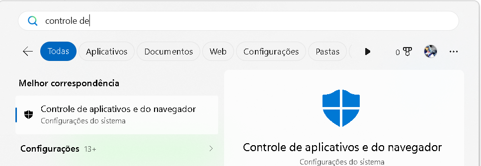
Clique no título Controle de aplicativos e do navegador. Não clique em Ativar: esse botão pertence ao bloqueio de aplicativos potencialmente indesejados, que é outra proteção.
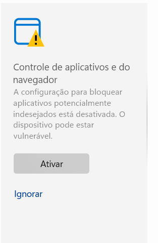
Na página aberta, encontre a seção Controle Inteligente de Aplicativos.
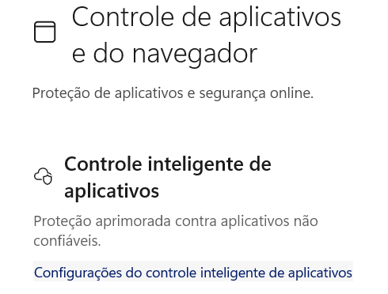
Clique em Configurações do Controle Inteligente de Aplicativos.
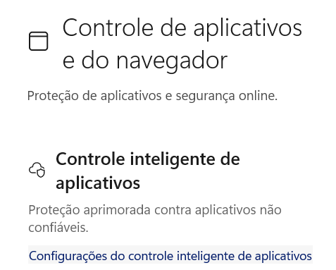
Se a opção Ativado estiver marcada, selecione Desativado e confirme o aviso apresentado pelo Windows.
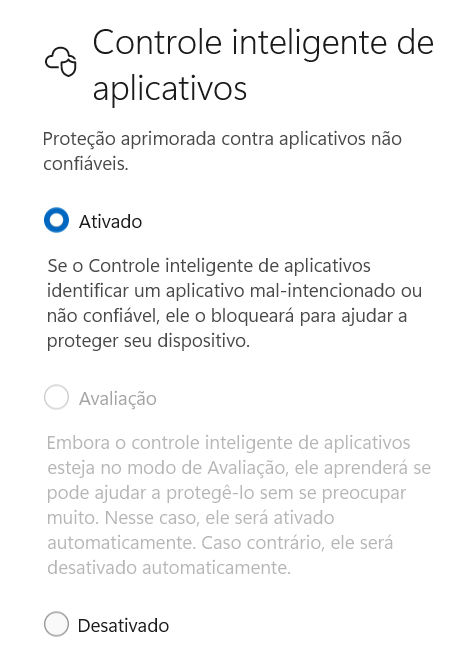
Confira se Desativado ficou selecionado. Depois, reinicie o computador e execute novamente o Setup.exe.
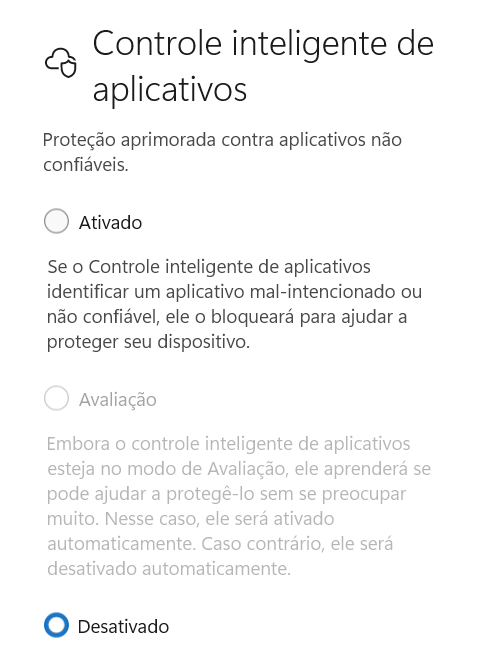
Manual
Use este roteiro se o Windows mostrar aviso de seguranca ou se for a primeira instalacao do IMD.
Clique em Baixar Setup.exe. Quando terminar, o arquivo aparece no historico de downloads do navegador.
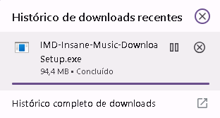
Na pasta Downloads, clique com o botao direito no Setup.exe.
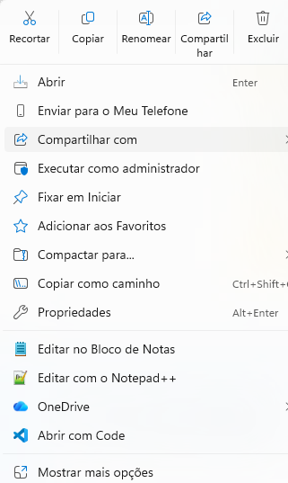
Se necessario, clique em Mostrar mais opcoes e depois em Propriedades.
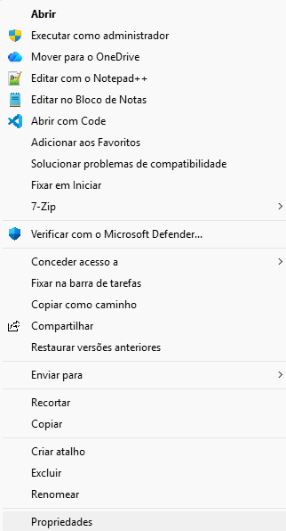
Na aba Geral, marque Desbloquear, clique em Aplicar e depois em OK.
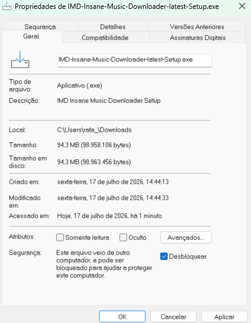
Abra o Setup.exe. A pasta sugerida em AppData pode ser mantida. Clique em Next.
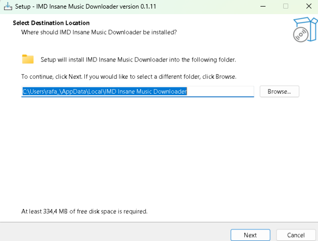
Deixe a pasta sugerida ou clique em Browse para escolher onde as musicas serao salvas.
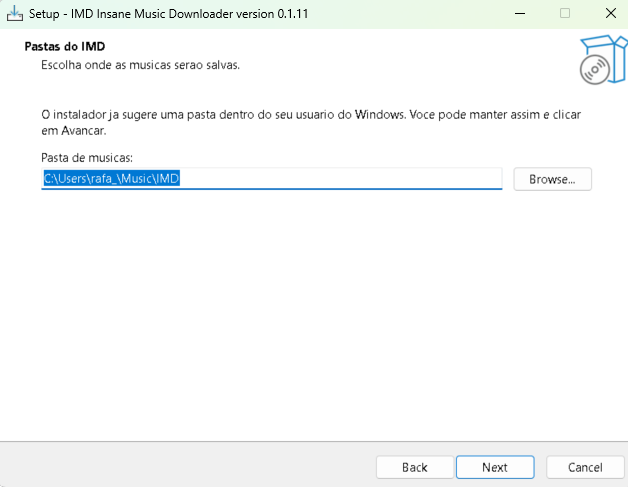
Essa pasta guarda historico, erros e cache. Pode manter a sugestao IMD-State.
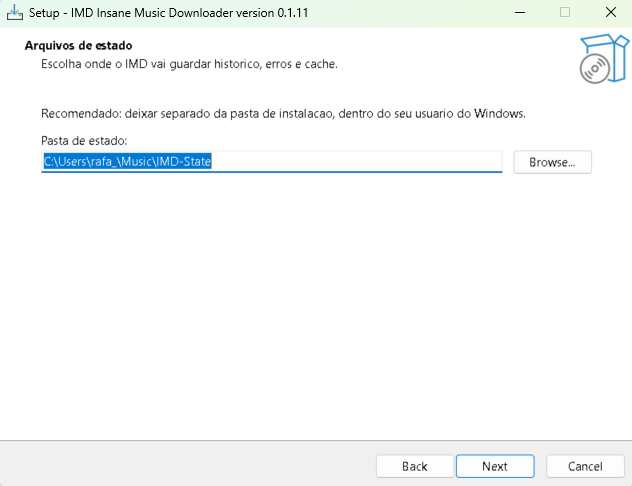
Cole a URL CSV do Google Sheets. Se ainda nao tiver, deixe o valor sugerido e ajuste depois no painel.
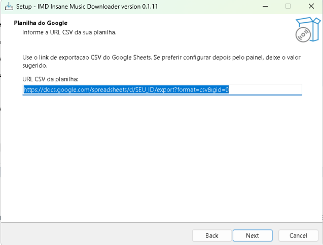
Marque se quiser criar um atalho na area de trabalho. Depois clique em Next.
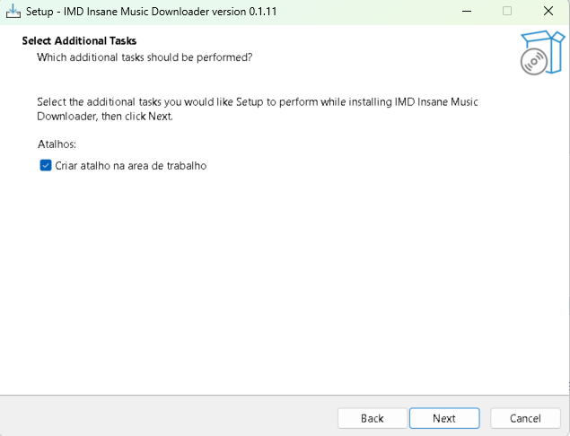
Revise o resumo e clique em Install para iniciar a instalacao.
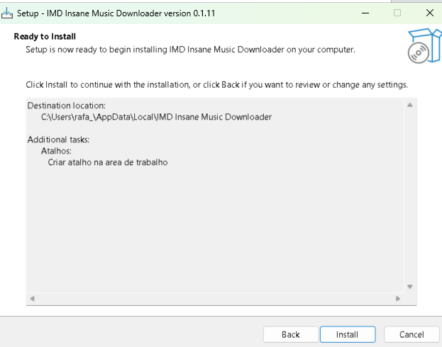
O instalador vai extrair os arquivos. Essa etapa pode levar alguns minutos.
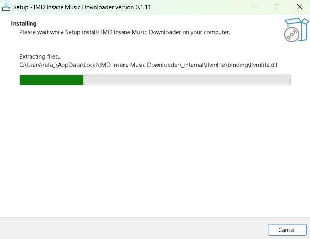
Deixe Abrir o IMD agora marcado e clique em Finish.
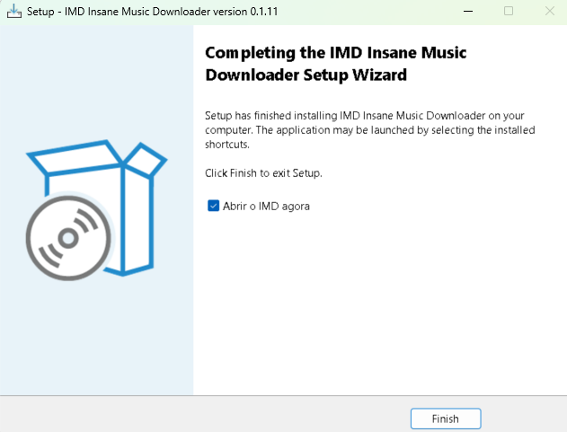
O navegador abre em 127.0.0.1:8765. Use os botoes Download Spotify ou Download YouTube.
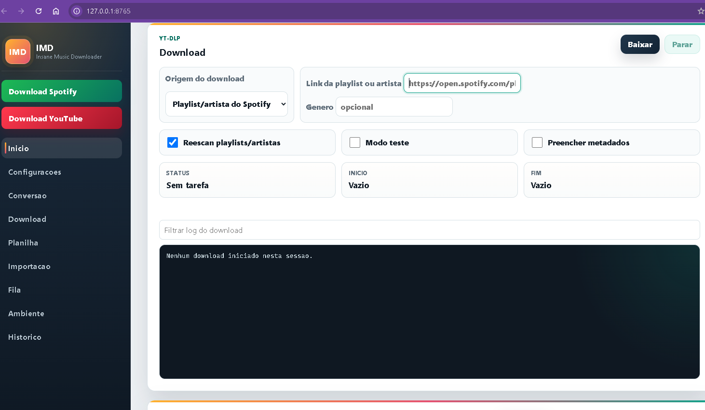
https://docs.google.com/spreadsheets/d/ID_DA_PLANILHA/export?format=csv&gid=0.Download
Para uso normal, baixe o Setup.exe. O MSI continua disponivel para instalacao tecnica ou automatizada.
Versão atual: v0.1.7. Os botões sempre baixam os instaladores mais recentes publicados no GitHub Releases.
Perguntas
Nao. Ele abre uma pagina local em 127.0.0.1, dentro do seu computador.
Baixe o Setup.exe. Ele tem assistente de instalacao e configuracao inicial.
Nao. O instalador foi pensado para levar o app pronto para usar.
Sim. O painel tem configuracoes basicas e avancadas em uma tela propria.
Use apenas com conteudos e direitos que voce pode acessar, baixar ou converter.